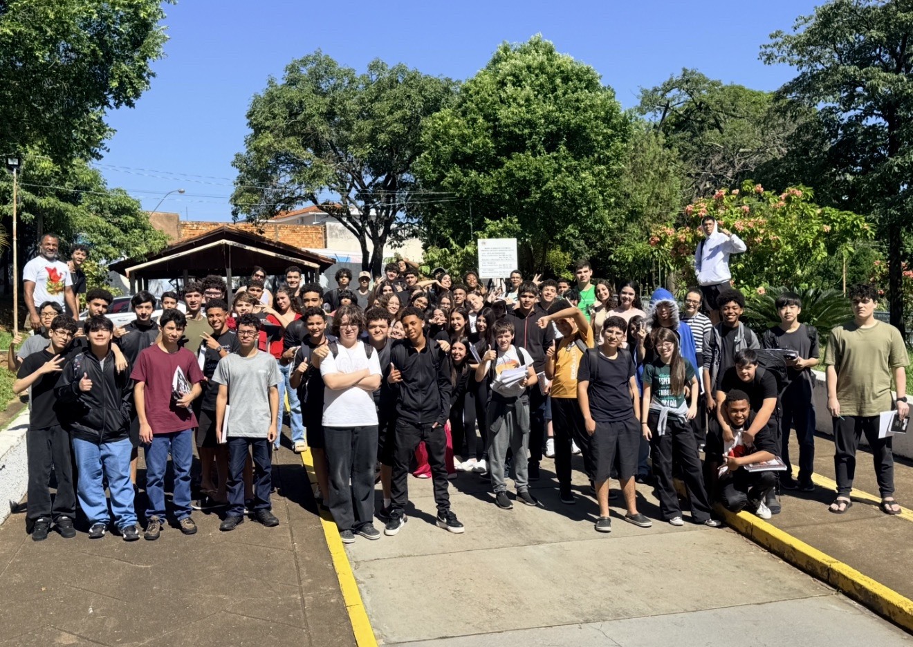

Seja bem-vindo a nossa turma
Somos a melhor turma do Senac de Presidente Prudente. Nós do 1º ano do Ensino Médio Técnico de Multimídia gostamos muito dos professores das áreas de Linguagens, Ciências da Natureza, Ciências Humanas e Matemática.

Ao longo do tempo, fomos construindo uma história que vai muito além dos momentos dentro da sala de aula. Cada conversa, risada, aprendizado e experiência contribuiu para formar quem somos como turma. Mesmo sendo diferentes uns dos outros, conseguimos compartilhar momentos especiais, superar desafios e criar amizades que tornam nossa convivência única. Ainda temos muito para viver e aprender juntos, construindo novas lembranças e histórias que levaremos conosco.
Mais que uma turma, uma história
Desde o início das aulas, nossa turma sempre buscou se conhecer melhor e fortalecer os laços entre todos. Mesmo com diferentes gostos, grupos de amigos e formas de pensar, procuramos sempre manter o respeito, a compreensão e o diálogo. Ao longo dessa caminhada, aprendemos a lidar com as diferenças, resolver conflitos e construir, juntos, um ambiente cada vez mais unido, acolhedor e agradável para todos.